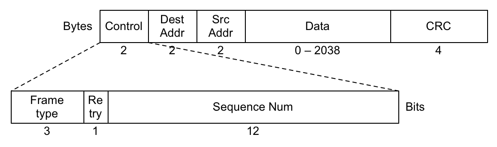
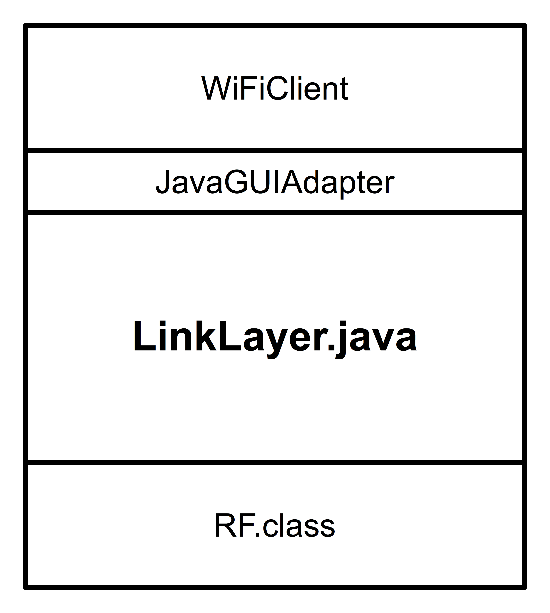
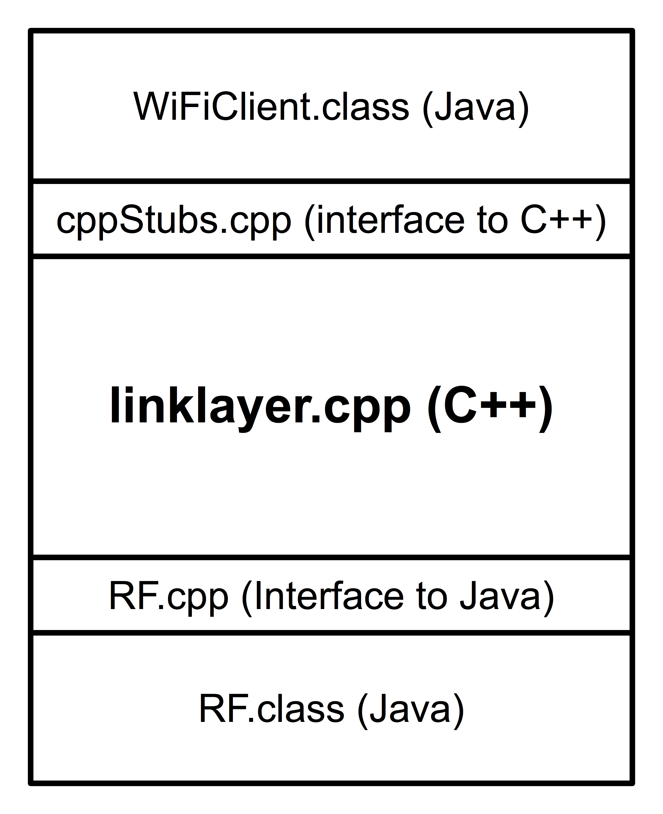

802.11~ Specification
An overview of the UPS 802.11 project
Introduction:
The course project involves implementing a simplified version of the
802.11 LLC/MAC layer atop the virtual RF layer you used in the previous
assignment. In other words, you will extend the broadcast-based
communication facilities of the RF layer to provide access control and
reliability, and offer these services to the layer above via a set of
interface routines. We will make the following simplifying assumptions:
- No base station or distribution system
- All machines are within range of all others
- No fragmentation or reassembly
- No power management mechanisms
- WEP will not be supported
- Calls to interface routines will not be overlapped
Your implementations will be expected to interoperate and share the RF
layer as specified in the 802.11 specification. The interface routines
you implement will also be identical, so that a common test application
can be used atop any of your implementation projects. We shall call our
version "802.11~", which is appropriate both because there are no more
unused letters to designate 802.11 standards, and because we're "sort of
802.11".
Contents:
Frame Format
The simplifications assumed in 802.11~ allow for a much less complex
frame format than that required by the full 802.11. The 802.11~ frame
is shown below (in bytes), with the Control field expanded to show its
contents (in bits):

Control Field
- Bits 0-2:
- These three bits describe the frame's type, with the five frame types below currently defined:
000 Data
001 ACK
010 Beacon
100 CTS
101 RTS
- Bit 3:
- This bit is set if the frame is a retransmission.
- Bits 4-15:
- The remaining 12 bits constitute a sequence number (a 12-bit
unsigned integer) so that receiving stations can distinguish between and
properly order frames. Sequence numbers always start at zero, and wrap
back to zero if they reach 212-1.
Addresses
MAC addresses in 802.11~ are unsigned 16-bit integers. The address consisting of all 1's (216-1)
is reserved as the broadcast address. Both the destination and source
addresses are included in all frame types, for consistency, though
Beacon frames use the broadcast address as their destination.
Data
Data frames may carry up to 2038 bytes of data, giving a maximum frame size of 2048 (2K) bytes.
CRC
All frames carry a four-byte CRC checksum, computed using the same
polynomial specified in IEEE 802.11. Implementing the CRC checksum will
be an extra-credit option for the 802.11~ project. Packets sent from
802.11~ implementations that do not compute valid checksums should fill the CRC field with 1s.
802.11~ Interface Routines — Java Versions
See the Java Documentation for more details on the Java code that's provided. The Dot11Interface describes the routines that must be implemented as part of your 802.11~ layer. They're presented briefly below. Note: The RF layer defines a variety of physical-layer constants that your implementation should reference.
int send(short dest, byte[] data, int len);
Send len bytes from data to the address specified in dest. If len exceeds the size of the byte array, send as many bytes as data contains.
int recv(Transmission t);
This function blocks until data arrives, at which point it writes the
incoming data and address information into the Transmission instance
passed as argument (respecting the size of the byte array in the
Transmission) and returns the number of bytes received.
int status();
This function returns a code representing the current status of the
802.11~ layer. The code reflects the most recent error, or the status
of the most recent transmission or other operation. Status codes
include:
| 1 | SUCCESS |
Initial value if 802_init is successful |
| 2 | UNSPECIFIED_ERROR |
General error code |
| 3 | RF_INIT_FAILED |
Attempt to initialize RF layer failed |
| 4 | TX_DELIVERED |
Last transmission was acknowledged |
| 5 | TX_FAILED |
Last transmission was abandoned after unsuccessful delivery attempts |
| 6 | BAD_BUF_SIZE |
Buffer size was negative |
| 7 | BAD_ADDRESS |
Pointer to a buffer or address was NULL |
| 8 | BAD_MAC_ADDRESS |
Illegal MAC address was specified |
| 9 | ILLEGAL_ARGUMENT |
One or more arguments are invalid |
| 10 | INSUFFICIENT_BUFFER_SPACE |
Outgoing transmission rejected due to insufficient buffer space |
int command(int cmd, int val);
This function provides a mechanism to pass command or configuration data
to an 802.11~ layer at runtime. One could use it to enable or disable
debugging output on-the-fly, change system parameters, or prompt the
802.11~ layer to summarize network activity, for example. Note: User-defined command code values should be greater than 10. A compliant 802.11~ implementation must support the following commands:
- Command 0: Options and settings
- Should summarize all command options and report their current settings. The accompanying value parameter is ignored.
- Command 1: Debug level.
- The meaning of non-zero values can be implementation dependent, but passing a value of 0 should disable all debugging output.
- Command 2: Slot selection.
- If the accompanying value parameter is 0 the link layer should
select slots randomly. Any other value should cause the link layer to
always select maxCW.
- Command 3: Beacon interval.
- The accompanying value specifies the desired number of seconds between the start of beacon transmissions. A value of -1 should disable the sending of beacon frames.
802.11~ Interface Routines — C++ Versions
Note that none of these routines are member functions (methods). Your implementation should be object oriented, but must still present a non-OO interface to the layer above. Note:
The RF layer defines a variety of physical-layer constants that your
implementation should reference. See lines 21 through 37 of RF.h.
int dot11_init(short MACaddr, ostream *output);
This routine must be called before any of the other 802.11~ routines are
used. The station adopts the 16-bit MAC address passed as argument.
The second argument is an output stream to which diagnostic messages
should be printed, unless the argument is null.
The call returns -1 on error and sets an internal error code.
int dot11_send(short destAddr, char *buf, int bufSize);
This non-blocking function asks the 802.11~ layer to transmit bufSize bytes, starting at address buf,
to the specified destination address. The function returns the number
of bytes queued for transmission, or -1 on error, in which case an
internal error code is set. Once the queued data is successfully
transmitted and acknowledged, the internal status code is updated.
int dot11_recv(short *srcAddr, short *destAddr, char *buf, int bufSize);
This function blocks until data arrives, at which point it returns the number of bytes of data copied into buf, respecting the size limit passed in via bufSize.
The source and destination addresses are filled in as a result of the
call. (Only data addressed to this station is returned via 802_recv, but destAddr
can help a station determine whether the frame was broadcast to all
stations, or addressed specifically to this station.) If the buffer is
too small to hold the entire data payload of the incoming transmission,
the rest should be discarded. The function returns -1 on error, and
sets an internal error code.
int dot11_status();
This function returns a code representing the current status of the
802.11~ layer. The code reflects the most recent error, or the status
of the most recent transmission or other operation. (See Java version
above for list of status codes.)
int dot11_command(int cmd, int val);
This function provides a mechanism to pass command or configuration data
to an 802.11~ layer at runtime. One could use it to enable or disable
debugging output on-the-fly, change system parameters, or prompt the
802.11~ layer to summarize network activity, for example. Note:
User-defined command code values should be greater than 10. (See Java
comments above for list of command codes that should be supported.)
Project Code:
If you're writing in Java, you don't need to know much about the project
structure — just implement the 802.11~ interface routines in the LinkLayer class, add any additional classes you need to the wifi package, compile, then run the WiFiClient to test things out. The pieces will end up fitting together like this:

Things get more complex if you implement your layer in C++. The virtual
physical layer (RF) is written in Java, as is the client. This means a
complete, running 802.11~ project really looks like a "C++ sandwich" —
there's a Java layer on top, your C++ code in the middle, and Java again
below your code:

The good news is that whether you choose to work in C++ or Java, I'm giving you all you need except for the small matter of the code in LinkLayer, but even there I'm giving you a starting point — a file that compiles with the rest of the project to produce a running program. (The current versions of linklayer.cpp and LinkLayer.java just call the RF layer directly when dot11 interface routines are called.)
Resources:
- Documentation for all Java code I'm supplying.
- Project files are available as an importable Eclipse project.
You'll need to replace the routines in LinkLayer.java with your own.
At the moment, they pretty much do nothing, but at least there's enough
there that the whole project compiles and runs. (C++ code framework is here.)
- An RF monitor application that understands and displays 802.11~ packets and can help you debug your implementation. It knows
enough about the RF layer to be able to report on transmissions and collisions,
and can wipe out transmissions if you tell it to.
- A working implementation of the project. You can test yours against it as you add functionality to your own.
- You can download a free copy of the 802.11 specification document from the IEEE.
- Some helpful diagrams, including the flow chart we went over in class.
Tips:
- Make sure you use a Packet class! Hide all of those
bit-mangling operations so you never have to see them again (after
testing them thoroughly, of course.) Make sure you implement a nice toString method (or overload the << operator in C++) so you can print packets easily.
- Use a finite-state diagram to describe the MAC behavior before you
start implementing. Be sure it includes details of where and when the
collision window is expanded as well as how ACKs are generated and sent.
- When desigining your implementation, think about classes first and
then threads — decompose the problem into classes, and then think about
which pieces of functionality within a class will need to be implemented
in separate threads.
- Use the "nuke" and "jam" settings on the latest version of the
monitor to help test your code: Jam can be used to keep the channel
busy, and nuke can test how your code responds to collisions.
Grading:
The project will be divided into a series of checkpoints, to help guide
your implementation and ensure that no one falls behind. Each of the
checkpoints is worth 5% of the overall project grade, and is pass/fail.
Brad Richards, 2016